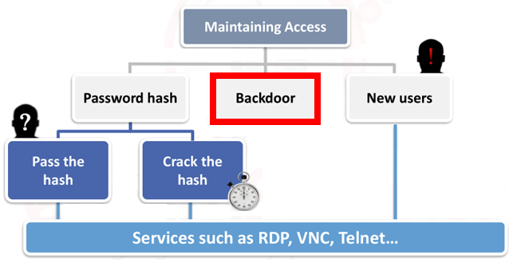

Backdoor
We have already seen the explanation of what is a backdoor in the chapter about
Trojan Horses1. Upload the backdoor on the victim machine
2. Execute the file:
◇ At prefixed times (5-10 seconds), it will try to connect back to our listener.
3. Make the backdoor persistent, meaning it start automatically at boot
◇ Depending on the OS, this can be done by editing: Windows registry, services, schedules, rc.local, init.d
DNS Services
The backdoor created will always try to connect to the IP address that we have set, BUT if we do not have a static IP this could be a problem.
To resolve this problem we can use a hostname obtained from a DNS service, in this way we can change the binding on the DNS management panel to point to our actual IP address.
These are some DNS services:
•
http://freedns.afraid.org/•
http://www.zoneedit.com/dynamicDNS.html•
http://xname.org/